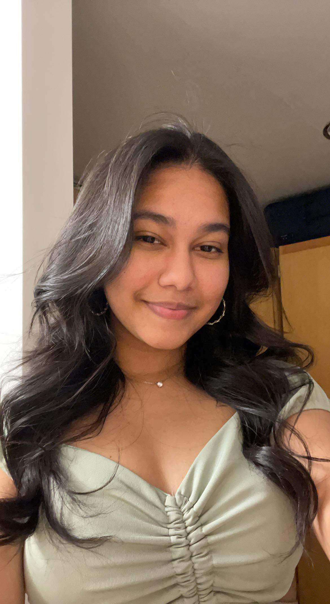

Hello! My name is Diba Chowdhury!
I am a second year at Tandon. My major is IDM and I am minoring in CS and math. I was born in Bangladesh and moved to Michigan when i was 8. I moved to New York City to attend collge. My favorite color is pink and I love all things cats. I have a cat named Bilai (which directly translates to cat in Bengali). I love her very much and I can show you a billion pictures of her if you ask!